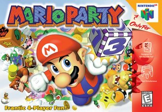
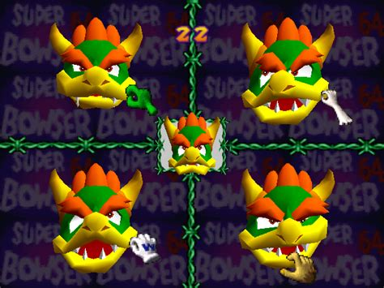

Mario Party is a party video game developed by Hudson Soft and published by Nintendo for the Nintendo 64.
What the game is about
The game features six playable characters: Mario, Luigi, Princess Peach, Yoshi, Wario, and Donkey Kong.
Every game in the main series has a standard Party Mode in which up to four players play through a board, trying to collect as many stars as possible. In every turn, each player rolls a die (Dice Block) and progresses on the board, which usually has branching paths. Coins are primarily earned by performing well in a minigame played at the end of each turn. On most boards, players earn stars by reaching a star space and purchasing a star for a certain amount of coins. The star space appears randomly on one of several pre-determined locations and moves every time a star is purchased, usually occupying a blue space.
 Click here to find out more.